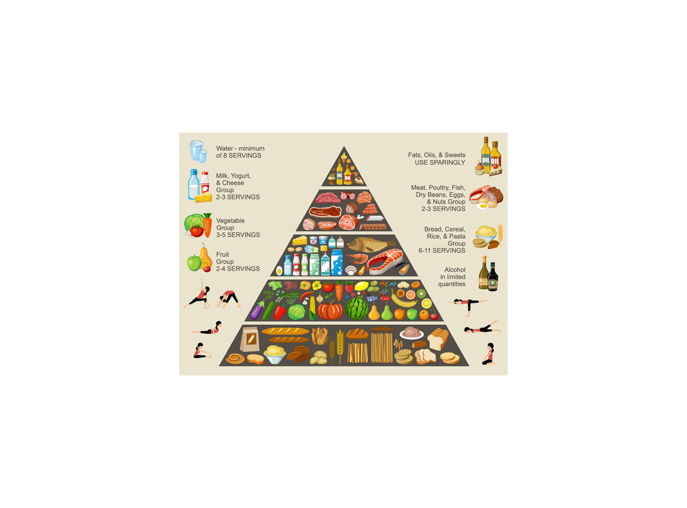
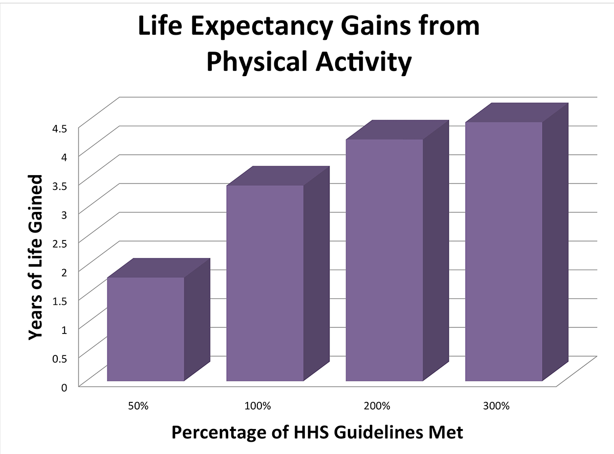

Wellness
If there is anything that Focal Foods endorses, then it has to be healthy eating and
fitness. Our products are sold with the purpose to get people to understand how important
it is to maintain a healthy diet. Remember this loyal customers: You must always ensure
that future generations understand how to preserve The Food Pyramid so that its message
is never forgotten. Focal Foods also believes in the science of exercise and how its
benefits bring the world into a better state. You must remember to exercise daily
because it will be good for you down the road. Below this opening are images that showcase
The Food Pyramid and the benefits of exercise.


©2016 FOCAL FOODS